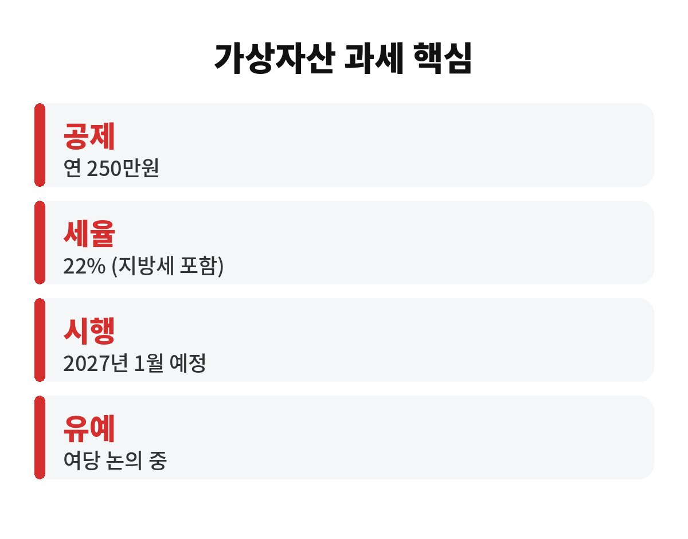

가상자산 과세는 지금 기준으로 2027년 1월 시행, 연 250만원 초과 수익에 22%입니다. 그런데 여당이 또 유예 쪽으로 가닥을 잡았다는 소식이 나왔어요. 코인을 들고 계신 분이라면 "그래서 내 세금은 어떻게 되는데?"가 제일 궁금하시죠?
오늘 한국경제 보도에 따르면 여당은 가상자산 과세를 미루는 수순을 밟으면서, 디지털자산법부터 먼저 만든다는 입장입니다. 아직 확정은 아니니, 정해진 것과 아닌 것을 나눠서 볼게요.
현재 법에 적힌 내용은 단순해요. 1년 동안 코인을 팔아 번 돈에서 250만원까지는 공제해 주고, 넘는 부분에 20%를 매깁니다. 지방소득세 2%까지 더하면 실제로는 22%예요.
예를 들어 올해 코인으로 1,250만원을 벌었다면 공제 후 1,000만원에 22%, 즉 220만원 정도를 내게 됩니다. 반대로 번 돈이 250만원 이하라면 낼 세금은 없어요.
| 연간 수익 | 과세 대상 | 세금(약) |
| 250만원 | 0원 | 0원 |
| 750만원 | 500만원 | 110만원 |
| 1,250만원 | 1,000만원 | 220만원 |

아니요. 유예는 "없애는 것"이 아니라 "시작 시점을 미루는 것"입니다. 과세 자체를 폐지한다는 얘기는 이번 보도에 없었어요. 가상자산 과세는 이미 한 차례 이상 미뤄진 전례가 있어서, 이번에도 미뤄질 가능성이 거론되는 겁니다.
다만 국회에서 법이 바뀌기 전까지는 지금 법이 그대로 살아 있습니다. 확정되지 않은 소식만 믿고 손놓고 계시면 낭패를 볼 수 있죠.
한 가지 더 짚자면, 세금은 "번 돈"이 아니라 "판 뒤 확정된 수익" 기준으로 계산됩니다. 오르는 코인을 들고만 있으면 아직 세금 대상이 아니고, 팔아서 차익이 생겼을 때 그 금액이 연간 합산되는 구조예요. 그래서 연말에 한꺼번에 팔지, 나눠서 팔지에 따라 체감 세금이 달라질 수 있습니다. 물론 이 부분도 유예나 법 개정 결과에 따라 달라질 수 있으니 확정 소식을 꼭 확인하세요.
또 하나, 손실이 난 코인이 있다면 그 기록도 잘 챙겨두세요. 같은 해 안에서 이익과 손실을 합산해 계산하는 방식이라면 손실 기록이 곧 절세 근거가 되기 때문입니다. 적어두는 데 5분이면 되는 일이 나중에 수십만원을 아껴줄 수도 있어요.
유예가 되든 안 되든, 해두면 손해 볼 일이 없는 것들이 있어요.
첫째, 거래 내역 내려받기. 거래소가 문을 닫거나 보관 기간이 지나면 내역을 못 구할 수 있습니다. 가상자산 과세 때 손익 계산의 기본 자료가 되니 미리 저장해 두세요.
둘째, 취득 가격 기록. 얼마에 샀는지 모르면 세금을 계산할 수가 없어요. 특히 거래소 간에 코인을 옮긴 분들은 꼭 확인하셔야 합니다.
셋째, 해외 거래소 정리. 국내 거래소와 달리 해외 거래소는 자동으로 정리되지 않는 경우가 많아서, 직접 모아둬야 해요.
연 수익이 250만원 아래인 소액 투자자라면 어차피 세금이 없으니 크게 걱정하지 않으셔도 됩니다. 반대로 수익이 크게 나는 분이라면 유예 여부에 따라 내년 세금이 수백만원씩 달라질 수 있어요. 이럴 땐 확정 소식이 나올 때까지 기록만 잘 챙겨두고 지켜보는 게 가장 안전합니다.
여러분은 올해 코인 수익이 공제 한도를 넘으셨나요? 댓글로 의견 남겨주시고, 이런 세금 소식은 구독해두시면 놓치지 않고 받아보실 수 있어요.
※ 본 글은 정보 제공 목적이며 투자 권유가 아닙니다. 세금은 개인 상황에 따라 다르니 세무 전문가와 상담하세요.